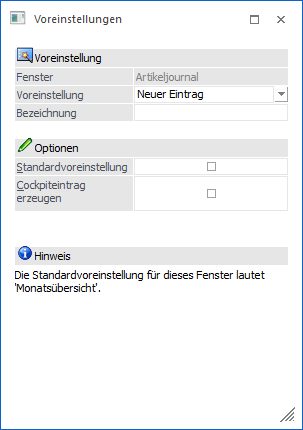
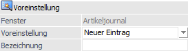
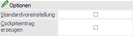
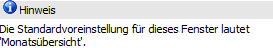

Durch Anwahl von "Voreinstellungen speichern" werden die im Ausgangsfenster getätigten Einstellungen und Selektionen (inklusive Filterauswahl) zur Speicherung vorbereitet und das Fenster "Voreinstellungen" im Modus "Speichern" geöffnet.

Folgende Einstellungen stehen zur Verfügung:
Voreinstellung

Ø Fenster
An dieser Stelle wird der Name des Ausgangsfensters angezeigt.
Ø Voreinstellung
Mit Hilfe einer Auswahlliste kann entschieden werden, ob eine neue Voreinstellung erzeugt oder eine bestehende aktualisiert werden soll.
Ø Bezeichnung
Hier kann der Name der Voreinstellung hinterlegt werden.
Optionen

Ø Standardvoreinstellung
Mit Hilfe dieser Option kann die Voreinstellung als "Standard" gekennzeichnet werden, wobei es immer nur einen Standard pro Ausgangsfenster geben kann. Das besondere an eine Standard-Voreinstellung ist, dass diese sofort beim Öffnen des Ausgangsfensters geladen wird, wodurch eine manuelle Auswahl entfällt.
Ø Cockpiteintrag erzeugen
Durch Anwahl dieser Option wird bei Speicherung der Voreinstellung ein Cockpiteintrag im aktuellen Cockpit der WinLine START erzeugt, wenn entsprechende Objektberechtigungen vorhanden sind. Der Cockpiteintrag selber ermöglich das direkten Öffnen des Ausgangsfensters, inklusive Laden der Voreinstellungen.
Achtung
Sollten im Cockpit nicht gespeicherte benutzerspezifische Einstellungen vorhanden sein, so werden diese automatisch verworfen.
Hinweis

An dieser Stelle wird Auskunft über den aktuellen Standard des Fensters gegeben.
Buttons

Ø Ok
Durch Anwahl des Button "Ok" bzw. der Taste F5 wird die Voreinstellung gespeichert und ggfs. ein Cockpiteintrag erzeugt.
Ø Ende
Durch Anwahl des Buttons "Ende" bzw. der Taste ESC wird das Fenster geschlossen und die Voreinstellung verworfen.